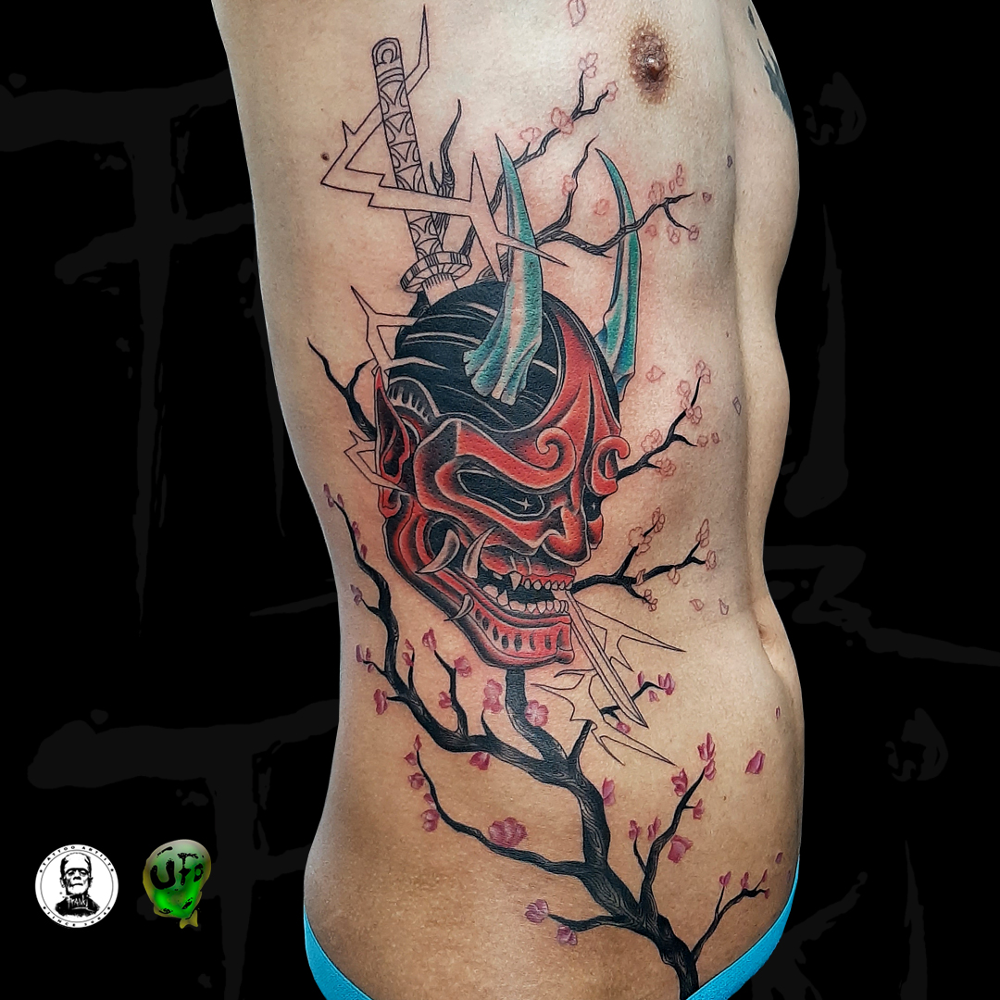
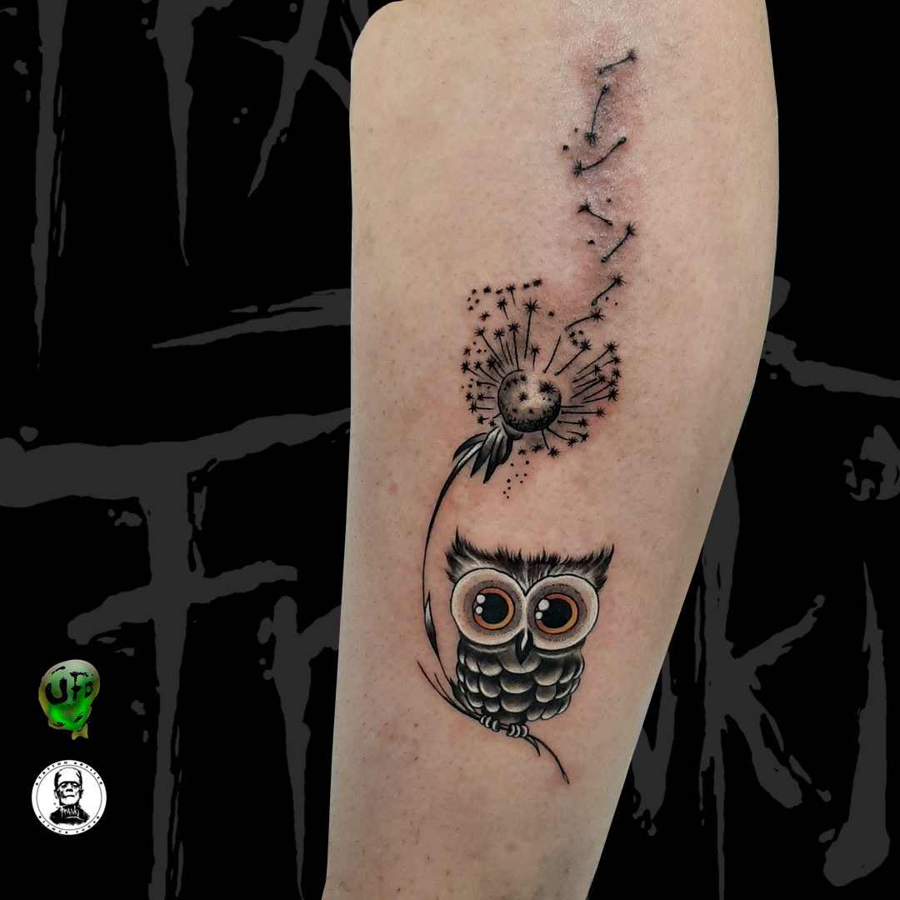
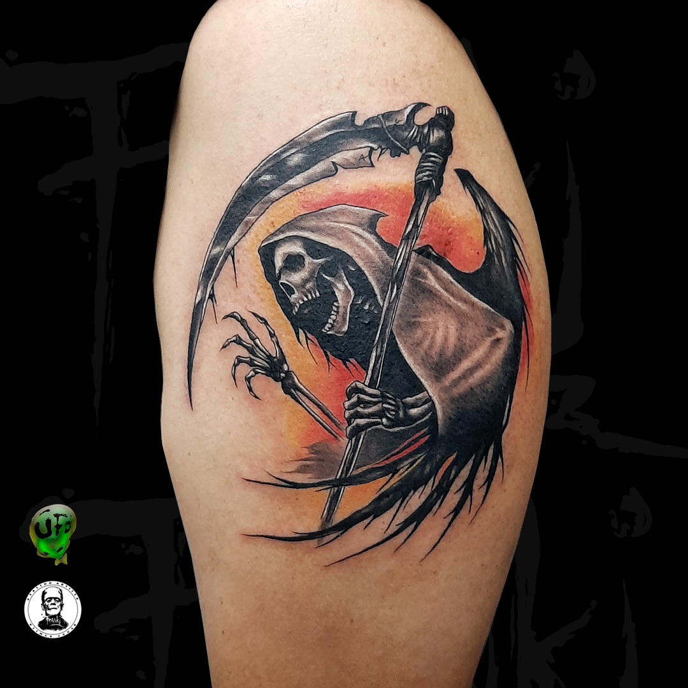
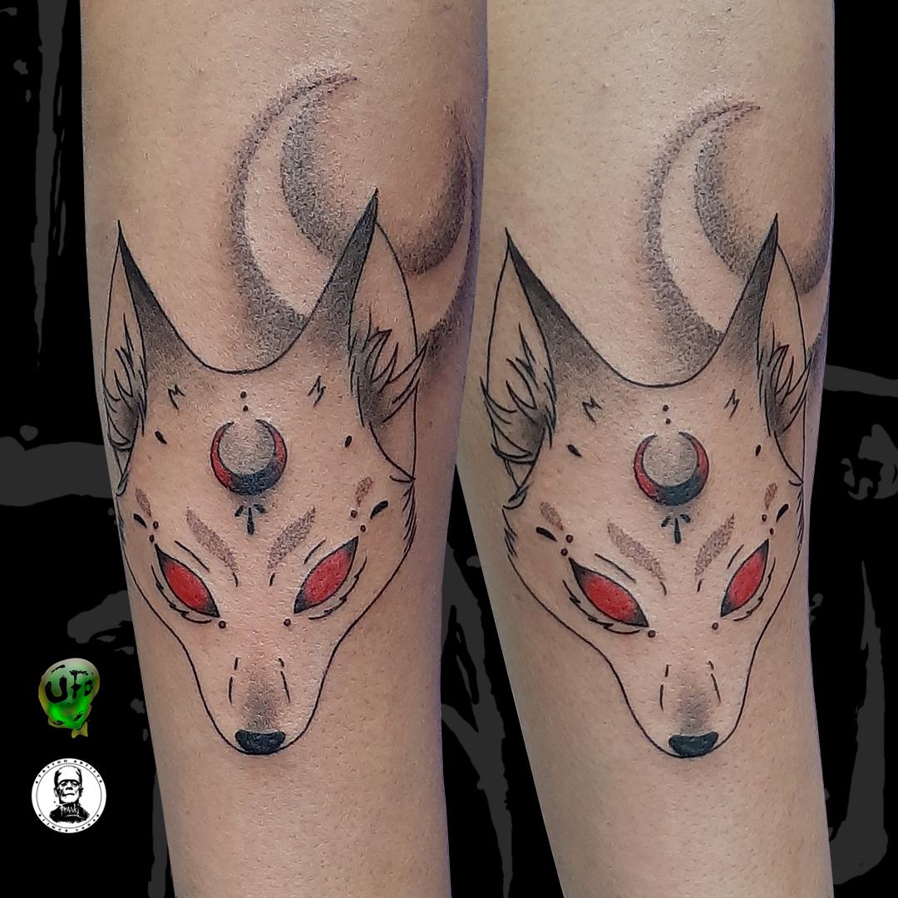
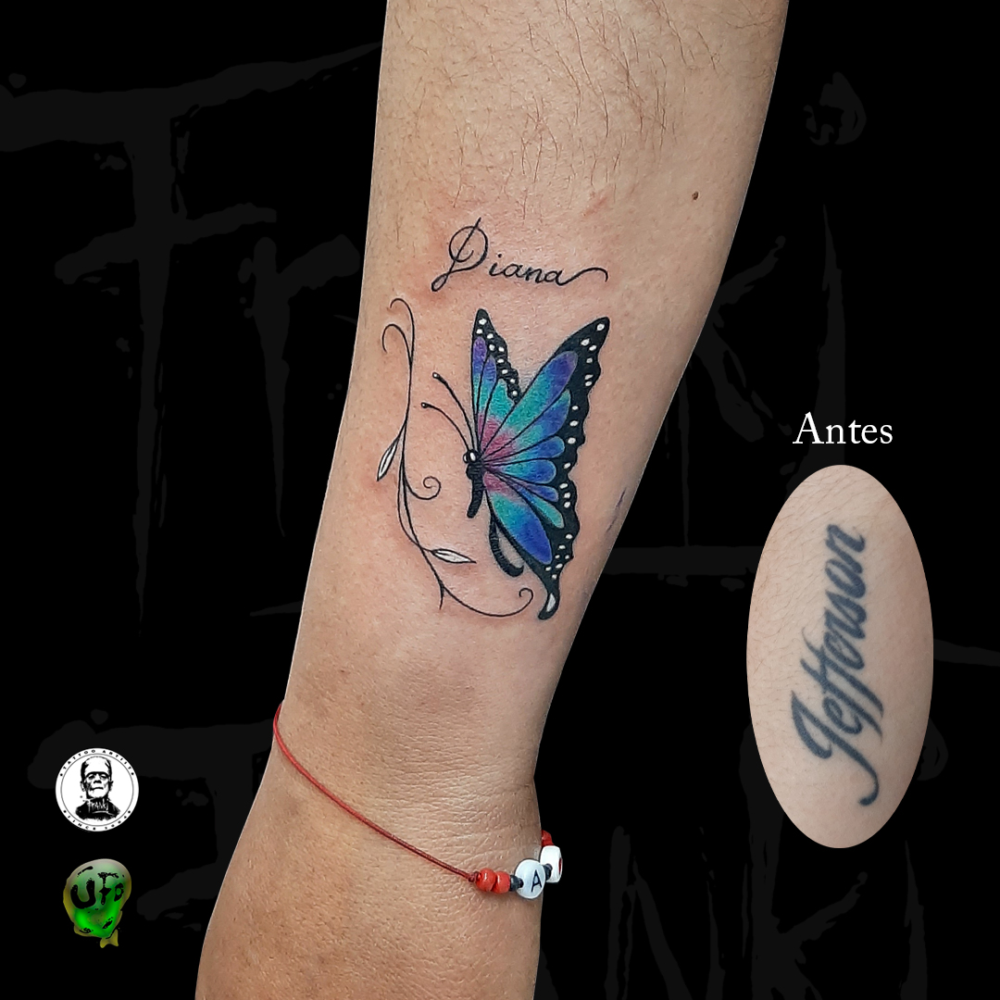
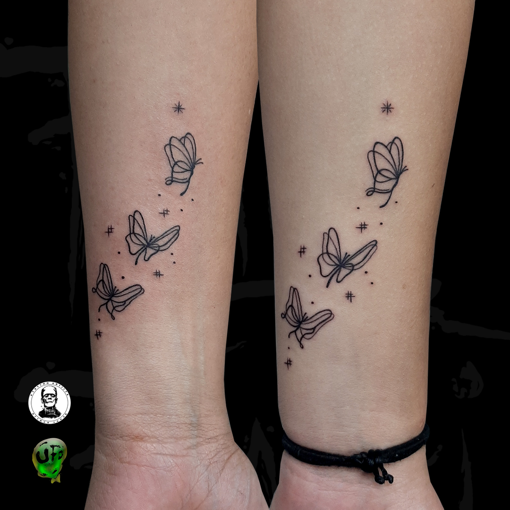
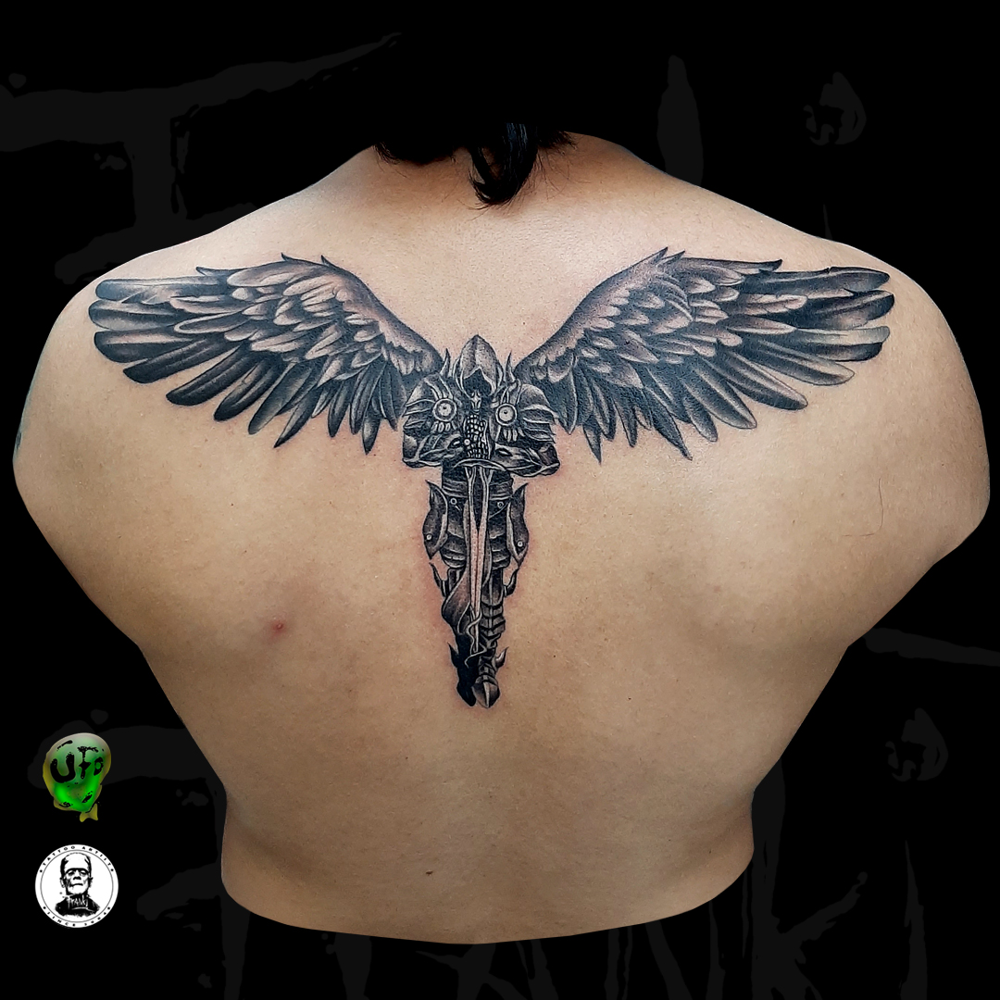
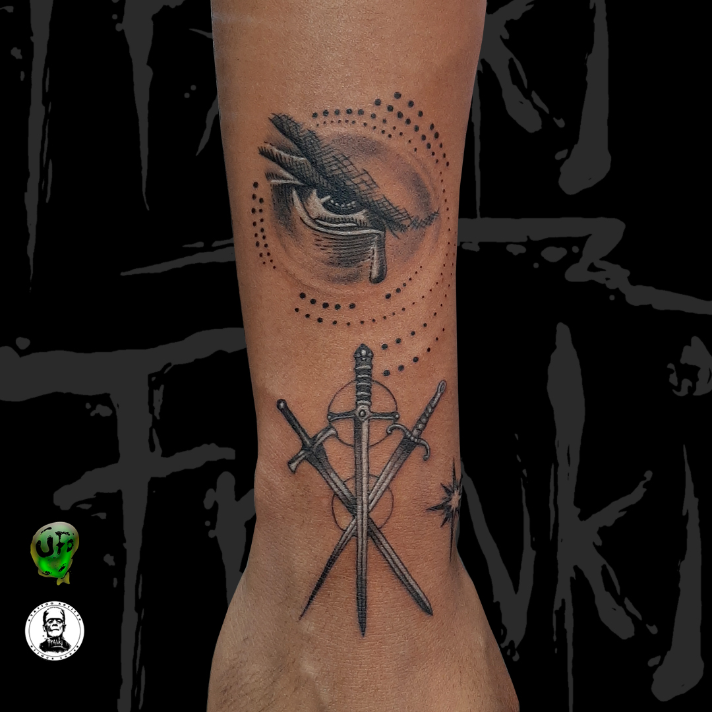
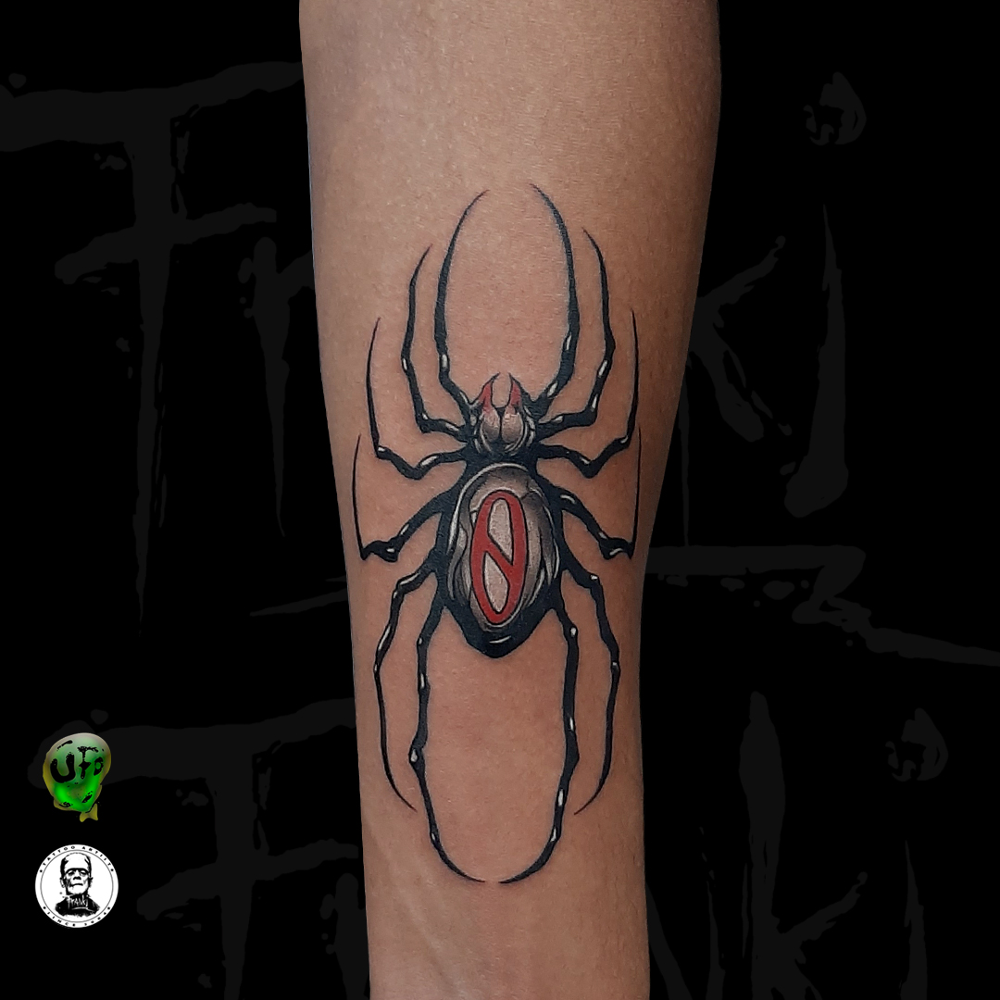
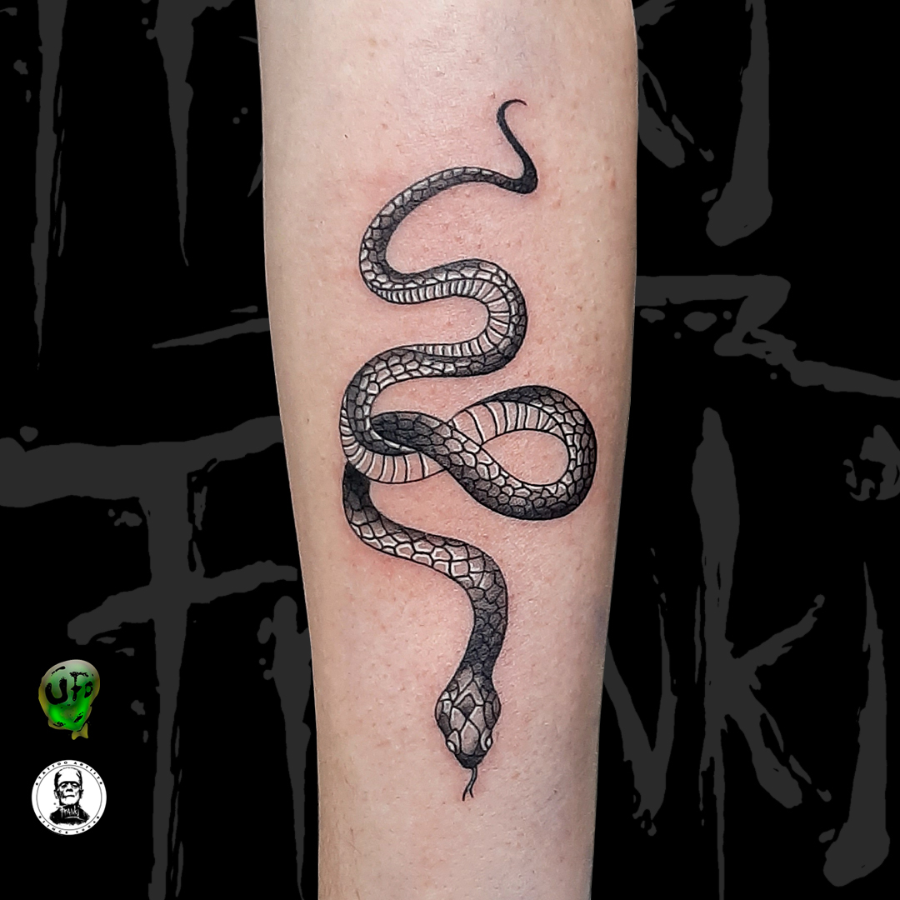

Proyectos personalizados en Ibarra. Blackwork, floral, caligrafía, dragones y piezas dark art.
El 50% de la belleza y nitidez de tu tatuaje depende de cómo lo cuides las primeras semanas. Sigue estas instrucciones oficiales de Franki Tattoo para que tus líneas y sombras cicatricen perfectas.











